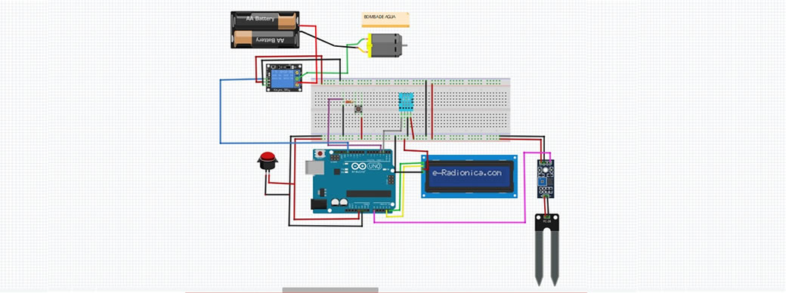

Finalizando la bitácora y el boceto prototipado
Para esta semana necesitaremos materiales para poder realizar la maqueta numero 1, mi grupo y yo utilizamos:
- Cartulina canson
- Cuter
- Tijeras
- Cinta
- Cilicona
- Reglas
Estos materiales nos ayudaron para poder hacer la estructura de lo que vendría ser la maceta (dos piezas). Además, nos ayudó para tener una idea de los cuales son las medidas correctas que necesitaremos.